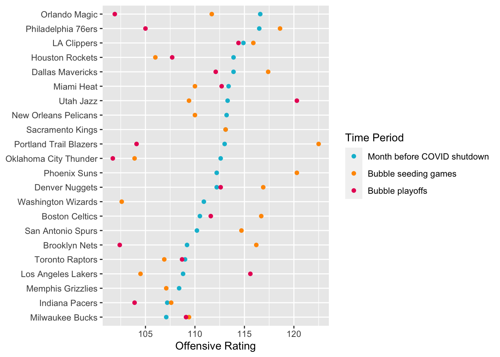
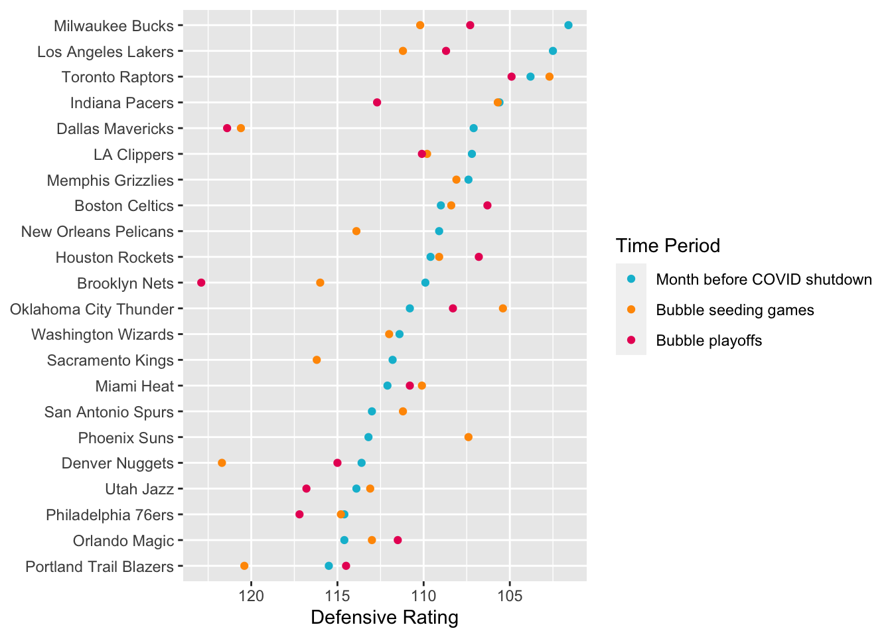
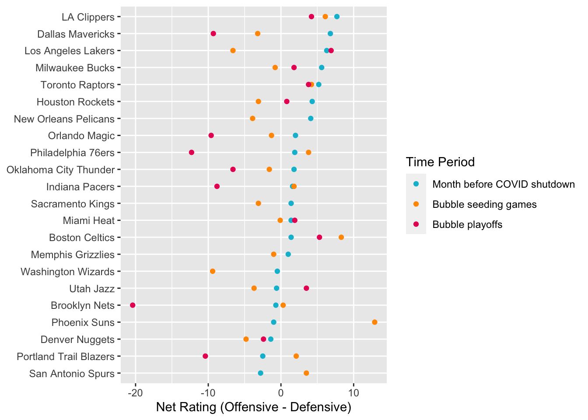
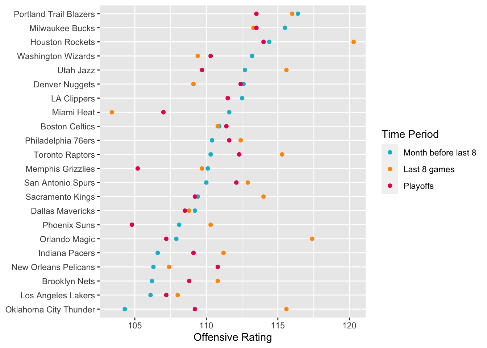
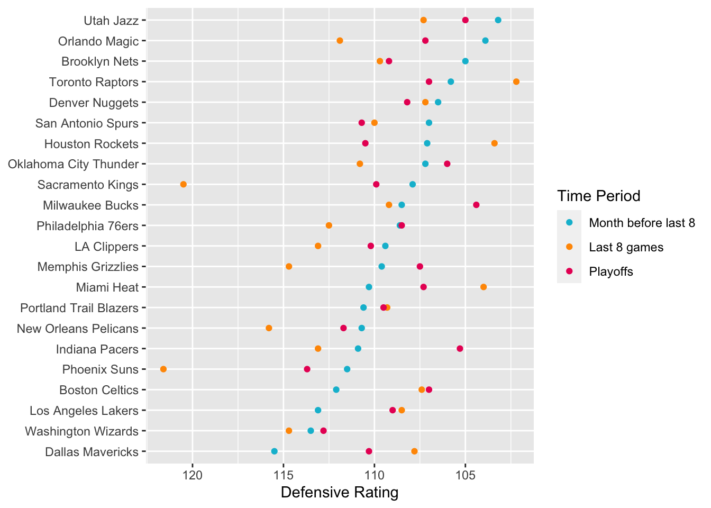
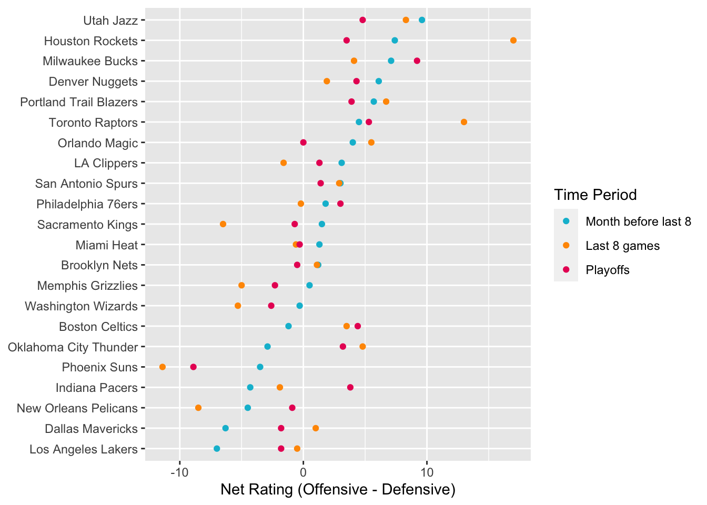
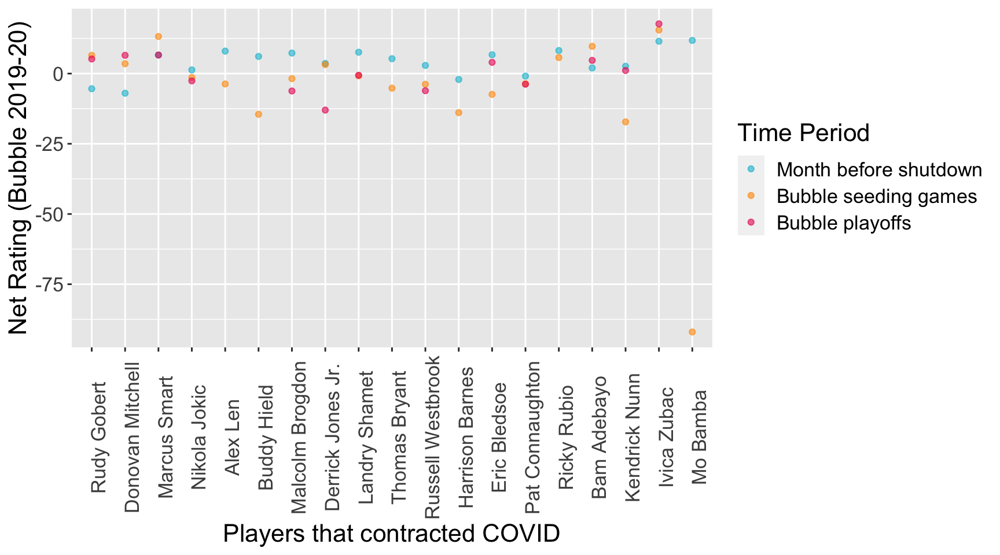
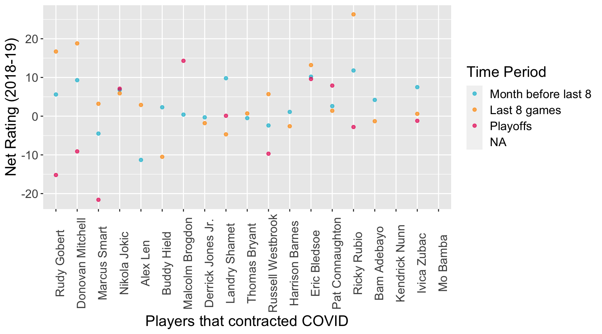

Chapter 5 Results
5.1 COVID
5.1.1 Approach
We decided to look at average game performance based on three distinct time periods: a month of games before the bubble (10-13 games), regular season games in the bubble (8 games), and playoffs.
If the playing during the COVID era changed the way the teams played, we could see change between these periods. We decided to keep the playoffs separate, because team strategies can be different and generally, the stakes are much higher. As previously explained, we focused on the Offensive/Defensive/Net ratings to evaluate the way they played.
Note: not every team made it into the playoffs and are lacking that playoff data accordingly.
5.1.2 Offense
Comparing the offensive performances, some teams did a lot worse in the bubble seeding games than before the break. However, just as many seemed to actually do better in the bubble. We were pretty surprised to see that, considering that it had been about 4 months of downtime. Between the seeding games and playoffs, there were also big changes in either direction. The Trailblazers totally dropped off for post-season play, while it looks like the Lakers were sandbagging in the seeding games (they ultimately won the championship).

5.1.3 Defense
However, looking at the defensive performance, teams mostly did slightly worse or about as well as they had been before the bubble. So, the bubble potentially had a slight negative effect on team defensive. Some teams actually did better than before – the Suns and Thunder stood out with major improvement in their seeding games, but these swings were much smaller than the largest negative swings.
Note that a lower Defensive rating means better defensive play. The X-scale has been flipped to allow for easier comparison with Offensive and Net ratings.

5.1.4 Overall
When combining the two to find the Net rating, the overall negative to neutral impact on defense is enough to swing overall performance in that direction. It is easy to see a large number of dots to the wall of the blue dots formed by ratings month before. In other words, overall performance for most teams looks worse or as good as before the bubble. There does not appear to be any relationship in this change to performance before the bubble, i.e. teams were impacted regardless of their previous rating.

The slightly negative impact on defense/net rating was somewhat interesting, but we wanted to compare against a control. Perhaps a similar decrease in performance could be seen at the end of a regular season. So, we made similar charts for the 2018-19 season with the same teams. We chose three time periods that were similar to the bubble analysis: a month before the last 8 games, the last 8 games, and the playoffs.
A similar amount of variance up and down can be seen in offense, and more in defense than the COVID season. The same decline in performance at the end of season can be see in the net ratings, although the changes looks even smaller than the COVID season. So, maybe the COVID season did not have much of an effect at all on net player performance at a team level, and the slight negative changes at the end of a season are more related to something else. Either way, the change in performance overall is not large and varies too much from team to team to really suggest a strong relationship.
season_19_long %>%
filter(rating == "ortg") %>%
semi_join(bubble_teams, by = "nameTeam") %>% #only teams that were invited to bubble
mutate(ordered_teams = fct_reorder2(nameTeam, df_type == "month_before", value, .desc = FALSE)) %>%
ggplot(aes(y = ordered_teams, x = value, color = df_type)) +
geom_point() +
scale_color_manual(values = c("month_before" = "#00bcd4",
"last_8" = "#ff9800",
"playoffs" = "#e91e63"),
labels = c("Month before last 8",
"Last 8 games",
"Playoffs"),
name = "Time Period") +
xlab("Offensive Rating") +
ylab(NULL)
season_19_long %>%
filter(rating == "drtg") %>%
semi_join(bubble_teams, by = "nameTeam") %>%
mutate(ordered_teams = fct_reorder2(nameTeam, df_type == "month_before", value)) %>%
ggplot(aes(y = ordered_teams, x = value, color = df_type)) +
geom_point() +
scale_x_reverse() +
scale_color_manual(values = c("month_before" = "#00bcd4",
"last_8" = "#ff9800",
"playoffs" = "#e91e63"),
labels = c("Month before last 8",
"Last 8 games",
"Playoffs"),
name = "Time Period") +
xlab("Defensive Rating") +
ylab(NULL)
season_19_long %>%
filter(rating == "netrtg") %>%
semi_join(bubble_teams, by = "nameTeam") %>% #only teams that were invited to bubble
mutate(ordered_teams = fct_reorder2(nameTeam, df_type == "month_before", value, .desc = FALSE)) %>%
ggplot(aes(y = ordered_teams, x = value, color = df_type)) +
geom_point() +
scale_color_manual(values = c("month_before" = "#00bcd4",
"last_8" = "#ff9800",
"playoffs" = "#e91e63"),
labels = c("Month before last 8",
"Last 8 games",
"Playoffs"),
name = "Time Period") +
xlab("Net Rating (Offensive - Defensive)") +
ylab(NULL) ### Players
If the COVID bubble did not impact team performance, what about COVID itself? A number of players were reported to have contracted the virus during the suspension of the season. We tried to see if this had any kind of lasting impact, regardless of severity of symptoms.
A quick search let us find the complete list of confirmed players that got COVID and when it was reported that they did. We filtered player data based on these names and sorted them based on when it was reported. We thought that given more time to recover, the greater chance that there was no impact on their performance. On the left was the first reported case in March, on the right was the most recent case in August, only two months from the start of the bubble.
The chart shows that all but 5 players did worse than before the shutdown, and thus before they contracted COVID. Furthermore, 3 of the players that outperformed after the restart were on the far left. Rudy Gobert, Donovan Mitchell, and Marcus Smart were all reported to have gotten the virus in March, giving 7 months for recovery. On the far right, we can see Mo Bamba take an absolute nosedive on his return. Looking a further into this, it seems that his symptoms were long lasting, even past the end of the season. Although the sample is small, this suggests that COVID has a generally negative effect even past the time that players are cleared to play. Comparing the results to player performance from the previous year reinforces this, as there does not seem to be any sort of end of season slump trend among the majority of players.
